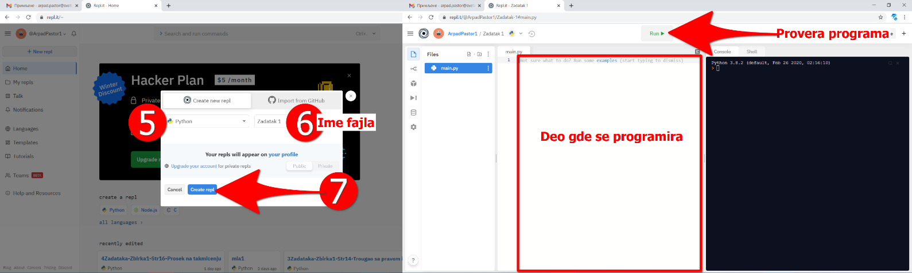

1. lekcija
Uvod u Python
Programski jezik Python nastao je početkom devedesetih godina prošlog veka. Njegov autor je Gvido van Rosum. Svako može da koristi programski jezik Python besplatno bilo u komercijalne ili u druge svrhe.
Jedna naredba po liniji programskog koda, sa ENTER se definiše kraj programskog reda.
# posle ovog znaka (#) se mogu pisati komentari koje program ne izvršava, a vama kao programerima može služiti kao pomoć u vidu objašnjenja programskog koda za koji se odnosi komentar.
Promenljive
Promenljive se uvode kao čaše koje u sebi mogu da prime različite vrednosti (brojeve, slova, tekst,…) koje će se kas-nije koristiti u programu.
Ime promenljive može biti slovo, broj ili donja crta (za spajanje više reči u jedno ime), NA POČETKU SE NE MOŽE NAĆI BROJ. Ime promenljive je osetljivo na velika i mala slova, SADRŽI SAMO SLOVA ENGLESKOG ALFABETA i NE SADRŽI PRAZNA MESTA.
Dozvoljena imena su, na primer: x, obim, drugi_sabirak, broj_sekundi, a2, a nedozvoljena su, na primer, 3d_grafika (jer počinje cifrom), prvi sabirak (jer sadrži razmak) i jezik_c# (jer sadrži nedozvoljeni znak #).
Primer naziva promenljivih: _ZBIR1, ZBIR2 ili zbir2. Promenljive: zbir ili Zbir – su dve različite promenljive.
Inicijalizacija promenljive – zadavanje određene vrednosti nekoj promenljivoj: a=157 ili zbir1=167.
Najvažniji tipovi promenljivih su:
int – celi brojevi (-2, -59, 0, 569, 847,…),
float – realni brojevi (-2.524, -59.1, 569.246, 847.12,…),
str – slova (‘a’, ‘abc’, ‘Petar’,…)
Postoje još tipovi promenljivih, ali ovi su najvažniji.
Aritmetičke - matematičke operacije
Prilikom izrade programa koristimo standardne matematičke operacije i zagrade. Sva pravila koja važe u matematici prilikom proračuna važe i ovde.
Simboli za matematičke operacije su:
Sabiranje +
Oduzimanje –
Deljenje /
Množenje *
Primetimo da smo oko operatora kucali razmake (na primer, 3 + 5, 8 - 2 ili 4 * 6). Ti razmaci nisu neophodni i isprav-no je napisati i 3+5 ili 4*6. Programeri vole da kucaju razmak oko svakog operatora (znaka operacije) da bi dobili tekst programa koji lepše izgleda i koji se lakše može pročitati.
Međutim, za vežbu nije potrebno instalirati Python na računaru, već programski kod unositi u online Python interpre-tator (program koji izvršava Python naredbe). Online Python interpretator možete naći na sledećoj adresi: REPL.it, pratite redom korake kao na slikama ispod.
{kind=link}
{kind=link}
Ispis rezultata programa – Print
Kada se izvrši proračun na osnovu komandi programa rezultat treba da se odštampa, odnosno prikaže na ekranu za korisnika koji je pokrenuo program. Ispisuje se vrednost nekog izraza koji je rezultat obrade ulaznih veličina progra-ma, računaru moramo nekako reći da on tu vrednost odštampa. Štampaj se na engleskom jeziku kaže print, pomoću koje se ispisuju vrednosti unutar te komande. Primeri:
print ("Pozdrav") - program će ispisati reč Pozdrav.
print (zbir) - program će ispisati vrednost promenljive zbir koja je zadana u tom trenutku.
print ("Rezultat sabiranje je", zbir) - u ovom slučaju pod znacima navoda se ispisuje fiksan tekst Rezultat sabiranja je i odmah do njega ispisuje vrednost promenljive zbir. U slučaju da je vrednost promenljive zbir recimo 15, tada će ispisati na ekranu: Rezultat sabiranja je 15.
U jeziku Python od verzije 3 može se slobodno koristiti znakovi različitih pisama. U sklopu print komande može se navesti nekoliko stvari unutar, razdvojenih zarezima. U tim situacijama print ispisuje svaku od njih, razdvajajući ih razmacima (na primer, kada se izvrši nareba:
print ("baci", 5) - ispisuje se baci 5.
Stvari navedene unutar print razdvajaju se sa po jednim razmakom. To se može promeniti tako što se na kraju print navede sep=”” i unutar navodnika navede šta će se koristiti da razdvoji delove. Na primer, ako se navede:
print(1, 2, 3, sep="") - ispisaće se 123, a ako se navede;
print(1, 2, 3, sep=", ") - ispisaće se 1, 2, 3.
Nakon svakog izvršavanja print prelazi se u novi red (naredni pozivi print ispisaće svoj rezultat u narednom redu). I to se može promeniti tako što se na kraju print navede end=”” i unutar navodnika ono što će se koristiti nakon celog ispisa. Na primer:
print(1, 2, end="") - prouzrokuje da se nakon ispisa ne pređe u novi red, već da naredni ispis ide neposredno nakon vrednosti 2.
Zadatak 1.
Napisati program da se prilikom njegovog pokretanja od korisnika traže ulazni podaci u vidu dva cela broja. Kao re-zultat program izračunava zbir, razliku, proizvod i količnik ta dva broja.
Rešenje:
Zadatak 2. - Smederevska tvrđava
{kind=link}
Rešenje:
Domaći zadatak 3. - Fudbalski teren 2
Rešenje:
Proba video materijala